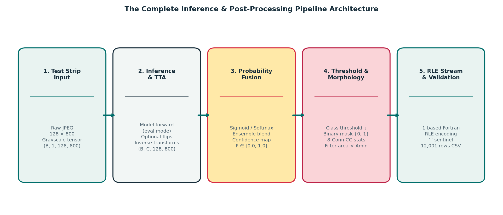

Milestone 5 Student Study Guides
Post-Processing & Ensembling (18 November 2026)
Welcome to Milestone 5 of the DLGenAI-26T3 Industrial Surface Anomaly Segmentation curriculum!
In earlier milestones, you explored the dataset geometry (\(800 \times 128\)), analyzed class imbalance, constructed multi-label data pipelines, implemented baseline and modern segmentation architectures (U-Net, FPN), established cross-validation splits, and tracked loss convergence in Weights & Biases.
In Milestone 5, you cross the finish line: transforming continuous model checkpoints into an optimized, robust, and competition-ready final inference pipeline. Post-processing and ensembling are not cosmetic afterthoughts; in industrial segmentation, an uncalibrated threshold or a single stray 3-pixel noise speckle on clean steel can degrade your leaderboard score by several percentage points.
1. Prerequisites from Earlier Milestones
Before beginning Milestone 5, ensure you are thoroughly grounded in the core concepts established in Milestones 1–4:
- Aspect Ratio & Canvas Geometry: Industrial line-scan images are \(800 \times 128\) pixels (\(6.25:1\) ratio). You understand why any transformation or rescaling must be restored to native \((128, 800)\) coordinates before evaluation.
- The 4 Defect Classes: You know the four defect categories (
defect_a,defect_b,defect_c,defect_d), their differing physical morphologies (from thin scratches to wide oxide inclusions), and the extreme sparsity of rare classes likedefect_b. - The Competition Evaluation Contract: You understand that the final leaderboard score combines 70% Foreground Dice (on positive pairs), 20% False Positive Score (penalizing false alarms on clean pairs), and 10% Empty Accuracy.
- Trained Checkpoint Artifacts: You have trained one or more segmentation models and saved their weights (
best.pt) along with configuration metadata.
2. The Complete Inference & Post-Processing Pipeline
The seven Milestone 5 study guides fit into a single, cohesive inference sequence:
┌─────────────────┐ ┌─────────────────┐ ┌─────────────────┐ ┌─────────────────┐ ┌─────────────────┐
│ 1. Test Images │ ────► │ 2. Inference │ ────► │ 3. Probability │ ────► │ 4. Threshold & │ ────► │ 5. Streaming │
│ 800 × 128 │ │ & TTA │ │ Ensembling │ │ Morphology │ │ RLE & CSV │
│ Batches (B=16) │ │ H/V Flips & │ │ Weighted Soft │ │ Per-Class τ & │ │ 1-based Fortran│
│ Native Canvas │ │ Inversions │ │ Average Maps │ │ 8-Conn CC Amin │ │ " " Sentinels │
└─────────────────┘ └─────────────────┘ └─────────────────┘ └─────────────────┘ └─────────────────┘
[Guide 05] [Guide 03] [Guide 04] [Guides 01 & 02] [Guide 06 & 07]
Figure 0.1: The end-to-end inference and post-processing pipeline architecture, tracing test images from raw batches to submission rows.3. Curriculum Map: Milestone 5 Topics & Guides
The core Milestone 5 requirements are structured into seven focused, progressive study guides:
| Milestone 5 Core Topic | Primary Study Guide | Theoretical Foundations | Practical Implementation Focus |
|---|---|---|---|
| 1. Threshold Calibration | Guide 01: Probability Maps to Binary Masks | Sigmoid vs 5-way softmax activations, precision–recall trade-offs, metric divergence between naive Dice and competition score. | Precompute validation probabilities, define a search grid \(\mathcal{T}\), and calibrate per-class threshold vectors \(\boldsymbol{\tau}\). |
| 2. Morphological Filtering | Guide 02: Connected Components & Min-Area | 4- vs 8-connectivity topology, OpenCV stats, false-positive noise suppression, the mathematical recall ceiling on rare defects. | Implement 8-connected component analysis with OpenCV, measure component areas, and apply per-class area rules \(\mathbf{A}_{\min}\). |
| 3. Test-Time Augmentation | Guide 03: Test-Time Augmentation (TTA) | Forward transform \(\to\) predict \(\to\) spatial inverse \(\to\) aggregate cycle; physical plausibility of flips on steel strips; logit vs probability averaging. | Build a 2-view/4-view TTA pipeline, invert spatial probability maps, and run asymmetric coordinate alignment checks. |
| 4. Model Ensembling | Guide 04: Ensembling Models & Checkpoints | Parameter averaging (EMA) vs checkpoint blends vs multi-backbone ensembles; soft probability averaging vs hard mask voting; error correlation. | Blend predictions from diverse architectures with explicit weights \(\sum w_m = 1\); evaluate weights on Out-of-Fold validation. |
| 5. Scalable Kaggle Inference | Guide 05: Scalable Inference Architecture | Bounded \(O(1)\) streaming memory vs monolithic cache exhaustion; PyTorch inference_mode, AMP, pinned memory; batch size throughput. |
Architect a memory-bounded batch streaming loop that processes 3,000 images in \(<100\text{ MB}\) RAM without disk bloat. |
| 6. Submission Integrity | Guide 06: Submission Integrity & Contract | 12,001 rows contract, 1-indexed column-major Fortran RLE standard, single-space sentinel (" "), index clamping at \(102,400\). |
Write a robust Fortran RLE encoder and run an automated 7-point programmatic pre-flight validation audit script. |
| 7. Experiment Discipline | Guide 07: Experimentation & Ablation Ladders | The principle of causal attribution, the Ablation Ladder, multi-objective score breakdowns (Foreground Dice vs FP vs Latency), canary visual audits. | Systematically evaluate inference rungs one change at a time; avoid leaderboard overfitting; select two justified final submissions. |
4. Recommended Reading & Implementation Sequence
Follow this progressive path through the curriculum:
- Start with Post-Processing Optimization: Read Guide 01 and Guide 02. Learn how to convert your single best model’s continuous outputs into discrete masks and eliminate sensor noise speckles without erasing valid defects.
- Add Variance Reduction: Read Guide 03 to implement Test-Time Augmentation. Verify that your spatial inversions are pixel-accurate before running full validation sweeps.
- Combine Diverse Hypotheses: Read Guide 04 to blend complementary backbones or fold checkpoints via soft probability averaging.
- Engineer Bounded Execution: Read Guide 05 to ensure your inference notebook runs within Kaggle’s 30 GB RAM, 20 GB disk, and 9-hour execution ceilings.
- Lock Down the Submission Contract: Read Guide 06 to verify your Fortran RLE encoding, single-space empty sentinels, and 12,001-row CSV structure.
- Climb the Ablation Ladder: Read Guide 07 to conduct disciplined inference ablations and select your two final submission candidates based on solid local validation evidence.
5. Standalone Code Examples & Synthetic Walkthrough
To support hands-on experimentation without disclosing private training benchmarks, this curriculum includes complete, self-contained educational resources built on 100% synthetic data:
1. Interactive Walkthrough Notebook
- Jupyter Notebook:
notebooks/synthetic_inference_pipeline.ipynb - Paired Python Script:
notebooks/synthetic_inference_pipeline.py - Notebook Setup Guide:
notebooks/README.md
This walkthrough runs on CPU in under 2 seconds and demonstrates every stage of the pipeline from synthetic strip generation to multi-model inference, TTA inversion, thresholding, area filtering, RLE streaming, and pre-flight validation.
2. Standalone Diagnostic Scripts
-
Threshold Calibration:
examples/toy_threshold_search.pySweeps decision thresholds \(\tau\) and demonstrates metric divergence between naive mean Dice and the competition score. -
8-Connected Component Filtering:
examples/toy_component_filtering.pyDemonstrates OpenCV connected component labeling, removing isolated noise speckles while preserving genuine defects with 100% pixel fidelity. -
TTA Spatial Inversion:
examples/toy_tta_inversion.pyDemonstrates the forward-predict-invert-aggregate cycle and proves why un-inverted TTA completely destroys spatial localization. -
Ensemble Blending:
examples/toy_ensemble_blending.pyContrasts soft probability averaging against hard binary mask voting on borderline ambiguous pixels. -
Streaming Submission Generator:
examples/toy_submission_streamer.pyDemonstrates memory-bounded streaming batch inference directly into a validated 12,001-row CSV stream.
6. Teaching Philosophy and Boundaries
These study guides provide engineering principles, mathematical formulations, diagnostic tools, and failure mode analyses:
- They explain why operations succeed or fail, and give you the tools to test hypotheses scientifically.
- They do not provide pre-selected competition thresholds, fixed area cutoffs, chosen ensemble weights, or a finished submission file.
- They do not reveal internal exploratory findings or private leaderboard results from internal project runs.
- There are no assessment tasks or grading rubrics in Milestone 5; you will build, calibrate, and validate your own final inference notebook.